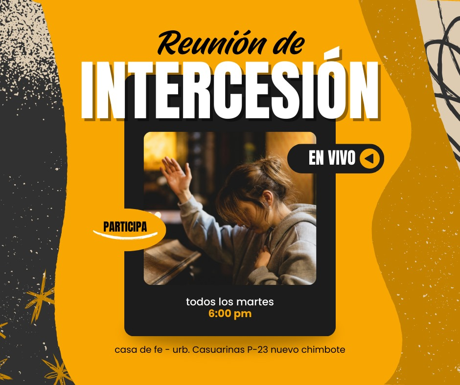
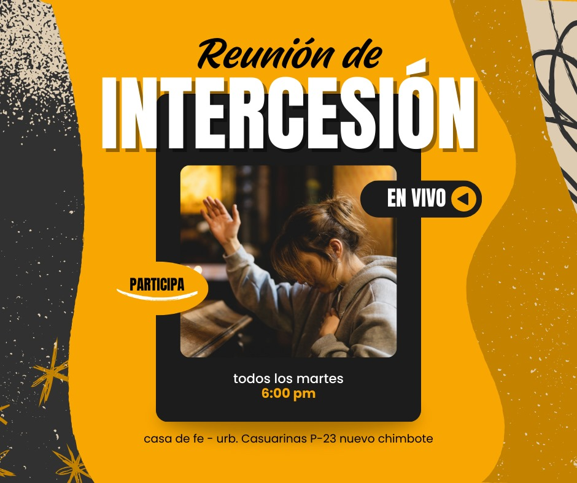

Misión
Honrar y difundir su palabra, ayudando a las personas a fortalecer su fe y vivir conforme a los principios bíblicos.

Honrar y difundir su palabra, ayudando a las personas a fortalecer su fe y vivir conforme a los principios bíblicos.

Ser una comunidad espiritual unida que refleje el amor de Cristo y promueva el crecimiento espiritual y social de sus miembros.

Descubre lo que tenemos preparado en Casa de Fe
Auditorio principal • 9:00 a.m.
Salón 2 • 7:00 p.m.
Aula de enseñanza • 6:00 p.m.
Patio principal • 10:00 a.m.
 



Pastor Principal en Casa de Fe
Mas de 30 años al servicio del Señor y graduado en la escuela de bellas artes lima.
Pastora en Casa de Fe
Motiva a los jóvenes a crecer en la fe y en valores cristianos.
Historias reales de cómo Dios transforma vidas en nuestra comunidad
“Desde que llegué a Casa de Fe, mi vida cambió por completo. Encontré paz, amor y una nueva familia.”
“Dios restauró mi hogar y mi corazón. Hoy puedo testificar de su fidelidad y amor infinito.”
“Cada mensaje y enseñanza me inspira a seguir creciendo en mi fe y servir a los demás.”
Momentos de fe, unión y esperanza en Casa de Fe


Estamos en Chimbote, ven a visitarnos y conocer CASA DE FE